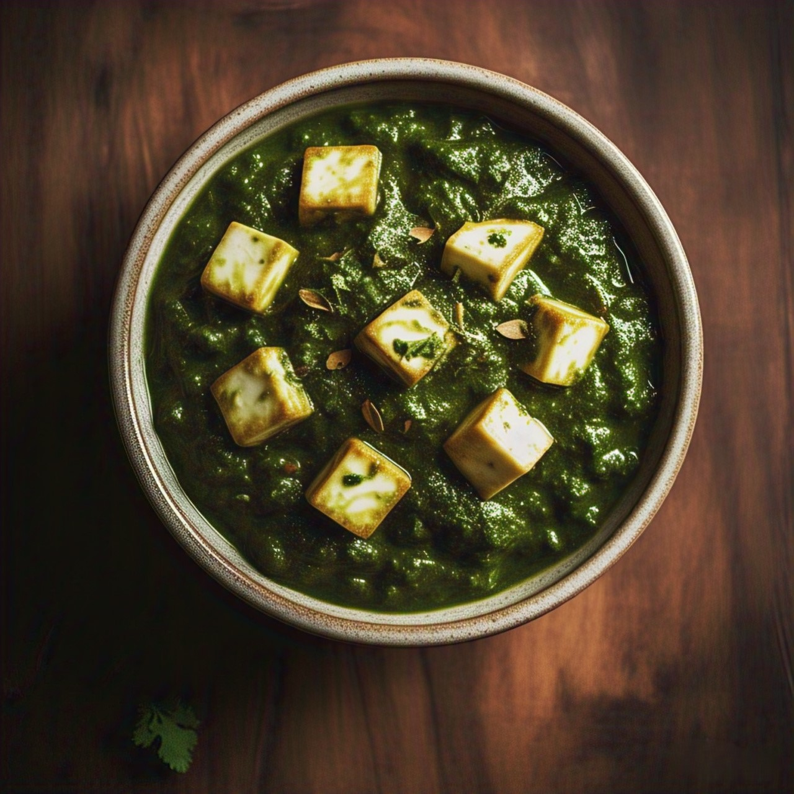

Paneer Masala (Spicy Paneer Masala)
Ingredients:
- 200g paneer (cut into cubes)
- 2 onions (finely chopped)
- 2 tomatoes (blended into puree)
- 2 green chilies (slit)
- 1 tbsp ginger-garlic paste
- 1/2 tsp turmeric powder
- 1 tsp red chili powder
- 1 tsp coriander powder
- 1/2 tsp cumin powder
- 1 tsp Kitchen King Masala
- Salt as per taste
- 2 tbsp oil
- Fresh coriander leaves for garnish

Recipe:
- Heat oil in a pan, sauté onions till golden brown. Add ginger-garlic paste and green chilies, cook till raw smell goes away.
- Add tomato puree and cook until the masala thickens and oil separates.
- Add spices — turmeric, chili, coriander, cumin powders — and sauté for a minute.
- Add paneer cubes, salt, and a splash of water. Cook for 5 minutes.
- Finish with garam masala and fresh coriander.
Tip: Spicy, tangy, and loaded with masala awesomeness — best served with roti or jeera rice!
Palak Paneer
Ingredients:
- 200g paneer (cut into cubes)
- 3 cups spinach (palak) leaves
- 2 onions (finely chopped)
- 2 tomatoes (blended into puree)
- 2 green chilies (slit)
- 1 tbsp ginger-garlic (finely chopped)
- 1/2 tsp turmeric powder
- 1 tsp red chili powder
- 1 tsp coriander powder
- 1/2 tsp cumin powder
- 1 tsp Kitchen King Masala
- Salt as per taste
- 2 tbsp oil
- Fresh coriander leaves for garnish

Recipe:
- Blanch spinach and coriander leaves (boil for 2 mins, chill in ice water). Blend along with green chilies into puree.
- Heat oil in a pan, sauté onions till little golden brown. Add ginger-garlic, tomato and green chilies, blend them together into fine paste.
- Again heat oil in a pan, Add onion and other masalas paste, cook until the masala thickens and oil separates.
- Add spices — turmeric, chili, coriander, cumin powders — and sauté for a minute.
- Add spinach puree, salt, and stir for 5 mins.
- Add paneer cubes and garam masala. Simmer on low heat for 2 minutes.
- Add drizzle of cream for rich finish.
Tip: Creamy, healthy, and bright green — goes wonderfully with naan or jeera rice!
Malai Kofta
Ingredients:
- For the Koftas:
- 200g paneer (grated)
- 2 boiled potatoes (mashed)
- 2 tbsp maida
- 1/2 tsp salt
- Oil for frying
- 5-6 almonds and cashews cut into small pieces
- For the Gravy:
- 2 onions (chopped)
- 2 green chilies (slit)
- 1 tbsp ginger-garlic (finely chopped)
- 10 cashews
- 1 tsp coriander powder
- 1/2 cup fresh cream
- 1/2 tsp white pepper powder
- Salt as per taste
- 2 tbsp ghee or butter

Recipe:
- For the Koftas:
- Combine paneer, potatoes, maida and salt.
- Roll into balls, filling with a bit of almonds and cashews mix.
- Fry deep until golden and crispy. Set aside.
- For the Gravy:
- Cook onions, green chilli slits and cashews together (boil for 2 mins). Blend into fine puree.
- Heat ghee or butter and add puree, coriander powder into it. Cook until the masala thickens and oil separates.
- Nopw add fresh cream and stir until the gravy becomes rich and thick.
- Add salt and white pepper as per taste.
- Slide in the koftas gently into the gravy before serving so that they remain soft.
Tip: Creamy, rich, and royal — serves stunningly well with naan or buttered jeera rice!